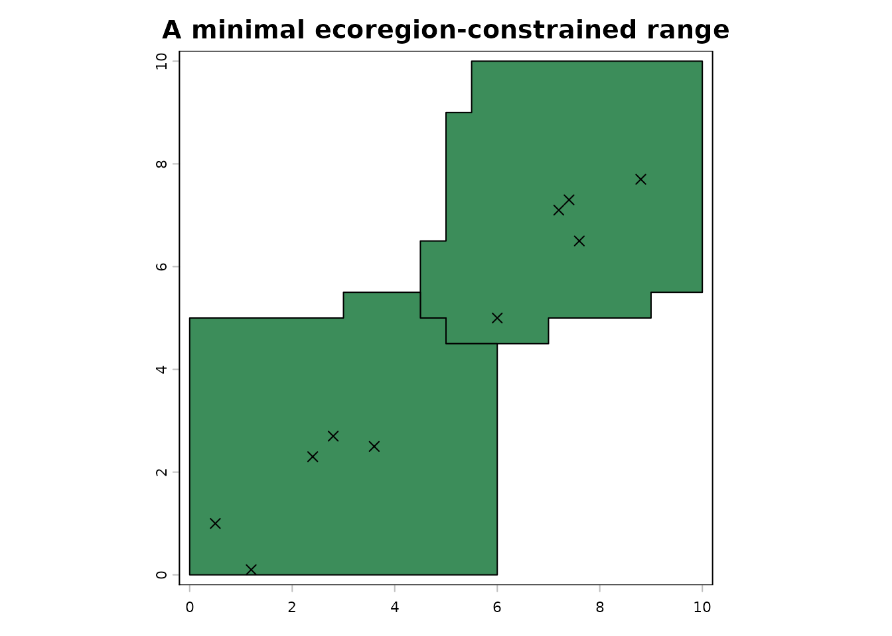
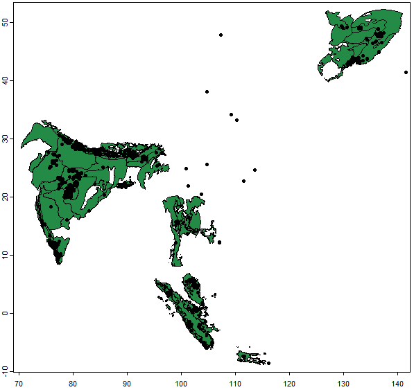
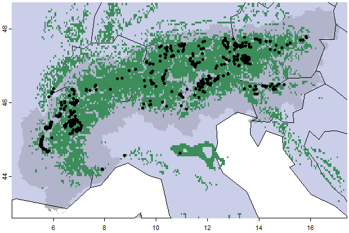

Part 1: Ecoregion-Based Range Inference
Source:vignettes/ecoregion-constrained-range-inference.Rmd
ecoregion-constrained-range-inference.RmdScope
This vignette focuses on the core ecological idea behind
gbif.range: species ranges are inferred from occurrences,
but those occurrences are constrained by ecoregions rather than expanded
across the landscape as a purely geometric hull.
The two longer examples cover a broad terrestrial workflow using
Panthera tigris and a finer regional workflow using
Arctostaphylos alpinus in the European Alps with custom
ecoregions derived from environmental rasters.
The relevant functions are:
-
get_range()for the actual range inference, -
read_ecoreg()andecoreg_listfor packaged large-scale ecoregions, -
make_ecoreg()for custom ecoregions derived from environmental rasters, -
cv_range()andevaluate_range()for evaluating the resulting maps.
How get_range() works
get_range() is designed for one focal species at a time.
The algorithm can be summarized as four linked operations:
- remove isolated spatial outliers from the occurrence table,
- identify occupied ecoregions and cluster occurrences within them,
- build convex hulls and buffers for each within-ecoregion cluster,
- intersect those polygons with the occupied ecoregions to enforce ecological limits.
This means that the final output reflects both the geometry of the occurrences and the eco-geographic structure of the study area.
A minimal offline example
The example below is deliberately small and fully offline. Two
synthetic rasters are used to create a custom ecoregion layer, then a
short occurrence table is passed to get_range().
set.seed(1)
# Create two simple environmental surfaces on a small study area.
r1 <- terra::rast(ncols = 20, nrows = 20, xmin = 0, xmax = 10, ymin = 0, ymax = 10)
terra::values(r1) <- rep(seq(0, 1, length.out = 20), each = 20)
r2 <- terra::rast(r1)
terra::values(r2) <- rep(seq(0, 1, length.out = 20), times = 20)
env <- c(r1, r2)
# Derive four custom ecoregions from the environmental layers.
eco <- make_ecoreg(env = env, nclass = 4)
#> CLARA algorithm processing...
#> Generating polygons...
# Define one species as an occurrence table in the format expected by get_range().
occ <- data.frame(
input_search = "example_species",
decimalLongitude = c(0.5, 1.2, 2.4, 3.6, 2.8, 6.0, 7.2, 7.4, 7.6, 8.8),
decimalLatitude = c(1.0, 0.1, 2.3, 2.5, 2.7, 5.0, 7.1, 7.3, 6.5, 7.7)
)
# Build the range from the occurrences and the ecoregion layer.
range_obj <- get_range(
occ_coord = occ,
ecoreg = eco,
ecoreg_name = "EcoRegion",
verbose = FALSE
)
terra::plot(
range_obj$rangeOutput,
col = "#3c8d5a",
main = "A minimal ecoregion-constrained range"
)
points(occ$decimalLongitude, occ$decimalLatitude, pch = 4)
Three practical points are worth noting here.
First, the occurrence object must contain decimal longitude and
latitude. In practice it will often be a getGBIF object
returned by get_gbif(), but a regular
data.frame is also valid.
Second, custom ecoregions created with make_ecoreg() can
be passed directly into get_range(). This is useful for
regional studies where global ecoregions are too coarse.
Third, get_range() returns a getRange
object. The spatial output is stored in
range_obj$rangeOutput, while the original inputs are kept
in range_obj$init.args.
Packaged versus custom ecoregions
Large-scale analyses usually rely on one of the packaged ecoregion layers:
vapply(ecoreg_list, `[[`, character(1), "filename")
#> [1] "eco_terra" "eco_fresh" "eco_marine" "eco_hd_marine"The public pattern for a terrestrial analysis is:
eco_terra <- read_ecoreg("eco_terra")
obs_tiger <- get_gbif("Panthera tigris")
range_tiger <- get_range(
occ_coord = obs_tiger,
ecoreg = eco_terra,
ecoreg_name = "ECO_NAME"
)In contrast, regional analyses often benefit from custom ecoregions.
The package ships with raster examples under inst/extdata,
including rst.tif, which can be used as a starting point
for a fine-grained environmental classification:
rst <- terra::rast(ext_file("rst.tif"))
my_eco <- make_ecoreg(env = rst, nclass = 200)
obs_arcto <- get_gbif("Arctostaphylos alpinus",my.eco)
range_regional <- get_range(
occ_coord = obs_regional,
ecoreg = my_eco,
ecoreg_name = "EcoRegion",
res = 0.05
)The key trade-off is ecological detail versus robustness to sampling density. Coarser ecoregions produce broader, smoother ranges. Finer ecoregions can better capture regional structure, but they also make the results more sensitive to local sampling gaps.
A broad terrestrial workflow: Panthera tigris
Tiger occurrences are a good example of the broad terrestrial use
case for gbif.range. The workflow is straightforward:
retrieve occurrences with a coarse precision filter, load the
terrestrial ecoregions of the world, and infer the range inside those
ecoregional boundaries.
# Step 1: download global tiger occurrences with a 100 km precision filter.
obs_tiger <- get_gbif(
sp_name = "Panthera tigris",
grain = 100
)
# Step 2: load the packaged terrestrial ecoregion layer.
eco_terra <- read_ecoreg("eco_terra")
# Step 3: infer the range at the default 0.1 degree output resolution.
range_tiger <- get_range(
occ_coord = obs_tiger,
ecoreg = eco_terra,
ecoreg_name = "ECO_NAME",
degrees_outlier = 5,
clust_pts_outlier = 4,
res = 0.1
)
terra::plot(range_tiger$rangeOutput, col = "#238b45")
points(obs_tiger[, c("decimalLongitude", "decimalLatitude")], pch = 20)
This is the typical continental to global pattern. The ecoregion
layer is externally defined and ecologically interpretable, while the
occurrence filter is intentionally conservative. In practice, this is
the kind of workflow where gbif.range is most useful as a
transparent alternative to unconstrained geometric envelopes.
A finer regional workflow: Arctostaphylos alpinus in the Alps
The second workflow is deliberately different. Here the issue is not worldwide coverage, but the opposite: the global terrestrial ecoregions are too coarse for a mountain system with strong local climatic structure. A custom ecoregion layer is therefore built from packaged example rasters.
# Step 1: define the Alps study region and retrieve occurrences.
alps_extent <- terra::vect(ext_file("shp_lonlat.shp"))
obs_arcto <- get_gbif(
sp_name = "Arctostaphylos alpinus",
geo = alps_extent,
grain = 1
)
# Step 2: create finer ecoregions from the packaged environmental rasters.
rst <- terra::rast(ext_file("rst.tif"))
eco_alps <- make_ecoreg(env = rst, nclass = 200)
# Step 3: infer the range at finer output resolution.
range_arcto <- get_range(
occ_coord = obs_arcto,
ecoreg = eco_alps,
ecoreg_name = "EcoRegion",
res = 0.05
)
terra::plot(range_arcto$rangeOutput, col = "#3c8d5a")
points(obs_arcto[, c("decimalLongitude", "decimalLatitude")], pch = 20)
This regional example shows why make_ecoreg() is part of
the main package workflow rather than an auxiliary convenience. At small
spatial extents, the ecological realism of the range map often depends
more on the choice of ecoregion layer than on minor changes in buffer
parameters.
Tuning the main range arguments
The most important get_range() arguments usually fall
into three groups.
degrees_outlier and clust_pts_outlier
control how aggressively isolated occurrences are removed. These matter
most when the input contains obvious anomalies or disjunct stray
clusters.
buff_width_point, buff_incrmt_pts_line, and
buff_width_polygon control how singletons, linear clusters,
and polygon hulls are buffered before the final ecoregion
intersection.
format and res control the output type. In
many exploratory workflows a vector output is convenient, whereas
gridded outputs are useful when later stacking many species maps.
A useful rule of thumb is this: at broad scale, the defaults for
outlier detection are often a reasonable starting point because the main
goal is to remove very isolated records or obvious anomalies. At finer
regional scale, the more consequential decisions are often the
observation precision filter used upstream in get_gbif()
and the granularity of the ecoregion layer generated by
make_ecoreg().
Evaluation workflows
The package provides two complementary ways to evaluate range maps.
cv_range() performs internal cross-validation of a
getRange object by repeatedly rebuilding the map from
subsets of the original occurrences:
cv_res <- cv_range(
range_object = range_obj,
cv = "block-cv",
nfolds = 3,
nblocks = 2,
backpoints = 500
)evaluate_range() compares saved range outputs with
external validation layers. The package includes a small validation
example under inst/extdata:
root_dir <- system.file("extdata", package = "gbif.range")
res_eval <- evaluate_range(
root_dir = root_dir,
valData_dir = "SDM",
ecoRM_dir = "EcoRM",
print_map = FALSE,
verbose = FALSE
)
head(res_eval$df_eval)Together, cv_range() and evaluate_range()
let you tune parameter choices on well-documented taxa before applying
the same workflow to data-poor species.
The same logic can be used with the broad and regional examples above. For example, a block cross-validation of the tiger workflow is:
cv_range(
range_object = range_tiger,
cv = "block-cv",
nfolds = 5,
nblocks = 2,
backpoints = 1e4
)That kind of evaluation is particularly useful when deciding how strongly to filter outliers, how fine the ecoregion layer should be, or whether a raster output resolution is appropriate for later biodiversity summaries.
Take-home message
get_range() is best understood as an ecological
range-construction tool rather than a pure hull algorithm. The strength
of the approach lies in combining occurrence geometry with
eco-geographic structure. The rest of the package, including GBIF
retrieval and large disk-based workflows, is built to feed that core
mapping step in a transparent and reproducible way.